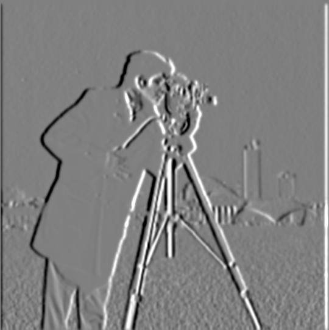
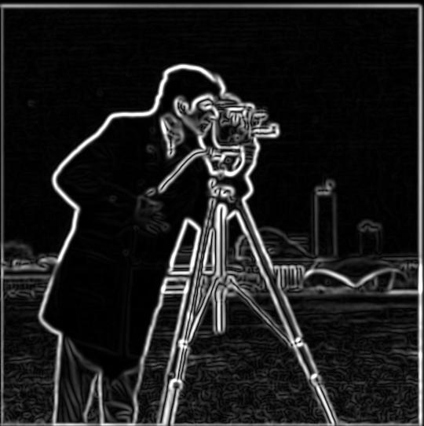
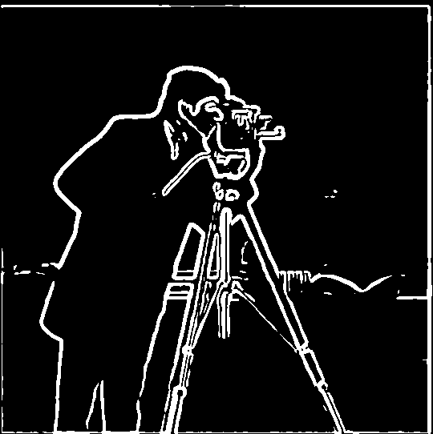
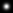
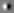
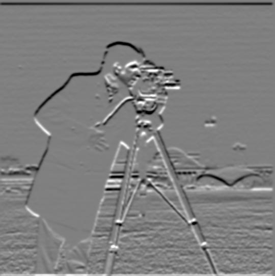

Derivative of Gaussian (DoG) Filter
I smooth the image with a 13×13 Gaussian at σ = 2, built from a one-dimensional kernel using an outer product, then apply the same finite differences as in Part 1.2. Smoothing suppresses small-scale texture and noise, but also reduces gradient peaks, so I use a lower threshold of 0.05 rather than retaining 0.2.
Method A: blur, then differentiate




Differences from the plain finite difference
Compared with Part 1.2:
- Much less noise. The Gaussian attenuates fine grass texture before differentiation, leaving fewer isolated responses.
- Thicker, smoother, connected edges. Major contours appear smoother, while their responses spread across several pixels. Smoothing reduces fragmentation but does not guarantee every contour is connected.
- Lower magnitudes. Blurring reduces the size of each step, so the useful threshold drops from 0.2 to 0.05.
- Less fine detail. Very small structures like the distant buildings are weaker or disappear.
Method B: a single convolution with DoG filters
Convolution is associative, so (I * G) * Dx = I * (G * Dx). I build the two derivative-of-Gaussian filters once, G * Dx and G * Dy, and convolve the original image with each of them.





Verification: one DoG convolution = two-step method
I compared blurring first and then taking derivatives with applying the DoG filters directly. After excluding a seven-pixel border, the maximum differences in x, y, and gradient magnitude were all below 1.1 × 10⁻¹⁵, so the two methods gave essentially identical results. I excluded the border because the two methods handle boundary pixels differently.